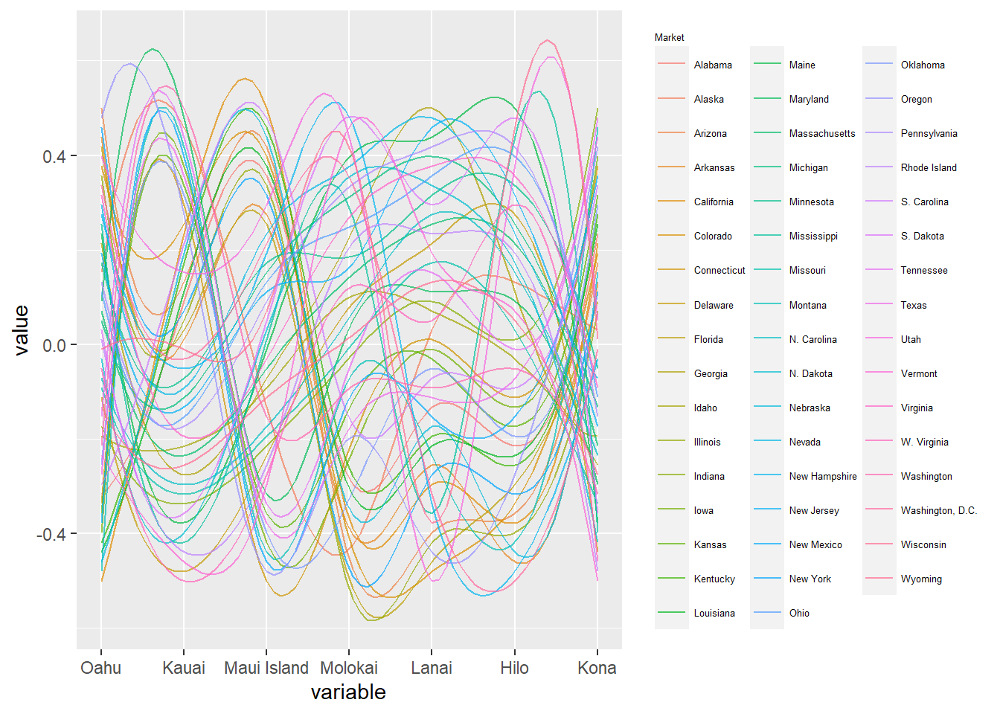

Chapter 1 Interactive component
- Interactive or animated component Select one (or more) of your key findings to present in an interactive or animated format using the language of your choice. Be thoughtful about how you use interactivity and/or animation: using these features to add value in a way that would not be possible with a static graph. Note that we take the difficulty of the language into account to a large extent: we expect a lot more from a graph created with plotly compared to D3. If you choose D3, use version 7.
Design with the goal of users walking away with a new understanding of the data and a clear understanding of the purpose of the visualization. If the tool is interactive, provide clear instructions on how the user should engage. Thoughtfulness and originality is more important than technical prowess; in all aspects of the project, think quality, not quantity.
Interactive graphs must follow all of the best practices as with static graphs in terms of perception, labeling, accuracy, etc.
Please see this chapter on sharing your D3 code online for options for sharing the interactive portion of your project.
Note: the interactive component is worth approximately 20% of the final project grade. Therefore, do not spend 90% of your time on it… concentrate on the exploratory data analysis piece.
# from chapter 2&3
data1.0 <- read.csv("1 visitor trend-不分state.csv")[-c(7:11),]
data2.0 <- read.csv("2 visitor trend-分state.csv")[-c(301:305),]
data2.10<- read.csv("2.1 visitor trend- state plus dest.csv")[-c(1051:1054),]
data3.0 <- read.csv("3 destination.csv")[-c(29:32),]
data4.0 <- read.csv("4 Q2主要数据.csv")[-c(217:221),]
library(tidyverse)## Warning: 程辑包'tidyverse'是用R版本4.1.2 来建造的## -- Attaching packages --------------------------------------- tidyverse 1.3.1 --## v ggplot2 3.3.5 v purrr 0.3.4
## v tibble 3.1.6 v dplyr 1.0.8
## v tidyr 1.2.0 v stringr 1.4.0
## v readr 2.1.2 v forcats 0.5.1## Warning: 程辑包'ggplot2'是用R版本4.1.2 来建造的## Warning: 程辑包'tibble'是用R版本4.1.2 来建造的## Warning: 程辑包'tidyr'是用R版本4.1.2 来建造的## Warning: 程辑包'readr'是用R版本4.1.2 来建造的## Warning: 程辑包'purrr'是用R版本4.1.2 来建造的## Warning: 程辑包'dplyr'是用R版本4.1.2 来建造的## Warning: 程辑包'stringr'是用R版本4.1.2 来建造的## Warning: 程辑包'forcats'是用R版本4.1.2 来建造的## -- Conflicts ------------------------------------------ tidyverse_conflicts() --
## x dplyr::filter() masks stats::filter()
## x dplyr::lag() masks stats::lag()library(dplyr)
empty_as_na <- function(x){
if("factor" %in% class(x)) x <- as.character(x) ## since ifelse wont work with factors
#ifelse(as.character(x)!="", x, NA)
ifelse(x!="", x, NA)
}
data1<- data1.0 %>%
mutate_each(funs(empty_as_na)) %>%
pivot_longer(cols = -c("Market", "Indicator", "Units", "Destination"),
names_to = "Year",
values_to = "number") %>%
mutate(Year = substr(Year, 2, 1000)) %>%
pivot_wider(names_from = "Year",
values_from = "number")## Warning: `funs()` was deprecated in dplyr 0.8.0.
## Please use a list of either functions or lambdas:
##
## # Simple named list:
## list(mean = mean, median = median)
##
## # Auto named with `tibble::lst()`:
## tibble::lst(mean, median)
##
## # Using lambdas
## list(~ mean(., trim = .2), ~ median(., na.rm = TRUE))
## This warning is displayed once every 8 hours.
## Call `lifecycle::last_lifecycle_warnings()` to see where this warning was generated.## Warning: `mutate_each_()` was deprecated in dplyr 0.7.0.
## Please use `across()` instead.
## This warning is displayed once every 8 hours.
## Call `lifecycle::last_lifecycle_warnings()` to see where this warning was generated.data2<- data2.0 %>%
mutate_each(funs(empty_as_na)) %>%
pivot_longer(cols = -c("Market", "Indicator", "Units", "Destination"),
names_to = "Year",
values_to = "number") %>%
mutate(Year = substr(Year, 2, 1000)) %>%
pivot_wider(names_from = "Year",
values_from = "number")
data2.1<- data2.10 %>%
mutate_each(funs(empty_as_na)) %>%
pivot_longer(cols = -c("Market", "Indicator", "Units", "Destination"),
names_to = "Year",
values_to = "number") %>%
mutate(Year = substr(Year, 2, 1000)) %>%
pivot_wider(names_from = "Year",
values_from = "number")
data3<- data3.0 %>%
mutate_each(funs(empty_as_na)) %>%
pivot_longer(cols = -c("Market", "Indicator", "Units", "Destination"),
names_to = "Year",
values_to = "number") %>%
mutate(Year = substr(Year, 2, 1000)) %>%
pivot_wider(names_from = "Year",
values_from = "number")
data4<- data4.0 %>%
pivot_longer(cols = -c("Group", "Indicator", "Units"),
names_to = "Year",
values_to = "number") %>%
mutate(Year = substr(Year, 2, 1000)) %>%
pivot_wider(names_from = "Year",
values_from = "number")
d1<- tibble(data1[,-c(5:21)][,-c(3)][,c(1,2,3,8)])
d2<- tibble(data2[,-c(5:21)])
d2.1<- tibble(data2.1)[,-c(5:21)][,c(1,2,3,4,8)]
d4<- tibble(data4.0[,-c(4:19)][,c(1, 2, 8)])library(parcoords)
library(d3r)## Warning: 程辑包'd3r'是用R版本4.1.3 来建造的colnames(d2.1)[5] <- 'Year_2019'
g<- d2.1 %>%
filter(Indicator == "Visitor arrivals") %>%
dplyr::select(Destination, Market, Year_2019) %>%
pivot_wider(names_from = Destination,
values_from = Year_2019)
g1 <- data.frame(t(data.frame(matrix(unlist(g), nrow=length(g), byrow=TRUE))))
colnames(g1)<- names(g)
library(GGally)## Warning: 程辑包'GGally'是用R版本4.1.2 来建造的## Registered S3 method overwritten by 'GGally':
## method from
## +.gg ggplot2ggparcoord(g1, columns = 2:8, scale = "center", alphaLines = .7, splineFactor = 10, groupColumn = 1) +
# geom_vline(xintercept = 2:7, color = "lightblue") +
theme(legend.title = element_text(size = 5), legend.text = element_text(size = 5))
interactive<- g1 %>%
parcoords(
rownames = F # turn off rownames from the data.frame
, brushMode = "1D-axes"
, reorderable = T
, queue = T
, withD3 = TRUE
)
interactive